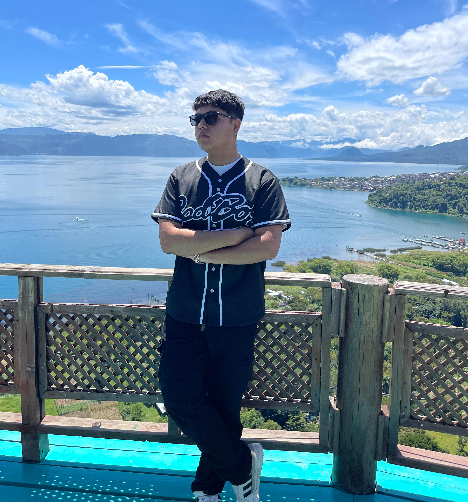

Nombre: Kevin Daniel Gutierrez Rodríguez
Nacimiento: 17 de Octubre 2006
Nacionalidad: Guatemalteco
Religión: Católico
KEVIN GUTIERREZ
Un 17 de octubre de 2006 a las 05:00 PM fue mi primer día en esta tierra, Mis Padres son Brenda Rodríguez y Valentin Gutierrez no tengo mucha memoria de mis primeros años en este mundo pero mi madre me cuenta que yo me la pasaba muy enfermo y que le pidieron al señor de Esquipulas por mi salud, cabe resaltar que soy Católico, desde este suceso mis padres y yo vamos de visita a Esquipulas a agradecer por mi vida.
Empeze mis estudios desde los 6 años, mi madre me dijo que queria que el primer día llorara para llevarme devuelta a casa pero dice que solo me despedi y entre a la escuela, yo era alguien que molestaba mucho todos los días había una queja nueva sobre mi y lo admito me portaba mal, esto fue en pre-primaria durante otros 3 años no sucedio nada interesante en mi vida más que entrar a primaria y mi comportamiento era igual en tercero hubo un cambio en mi en mi comportamiento ya que ya no me portaba mal, lo malo de esto esque al haberme creado la fama de ser el niño problema aunque yo no tuviera la culpa pensaban que era yo, durante mis estudios hice muchos amigos, pero mi visión no era quedarme aqui yo queria más así que cuando sali de sexto busque salir del lugar de donde vivo para estudiar en otro lugar y conocer más gente, yo queria entrar al PEMEM de zona 18 pero habia que hacer un examen de admisión pero no sabia los temas que venian en el, así que mi papá me pago tutorías para poder estudoiar donde yo queria.
Lamentablemente durante mi ciclo basíco fue la pandemia, clases virtuales y cosas así para mí esta etapa me hizo volverme más irresponsable ya que me desvelaba la mayoria de veces o no entraba a clases y mi promedio fue de lo más bajo ya que solo 60´s sacaba, para mi carrera Encontre KINAL igual que antes tuve que recibir tutorias para poder pasar el examen de admisión al principio estaba asustado de no poder pasar, pero gane el examen y he pasado dos años en KINAL acutualmente curso sexto perito y espero poder graduarme acá.